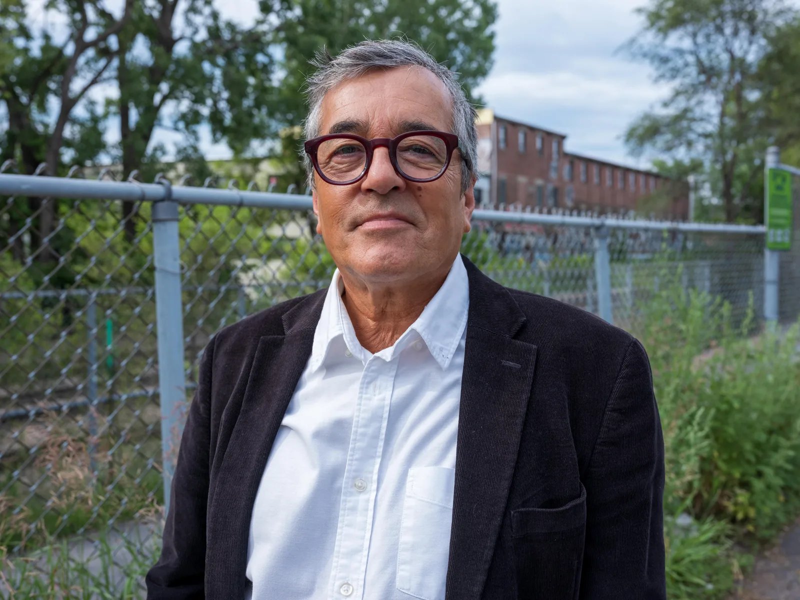
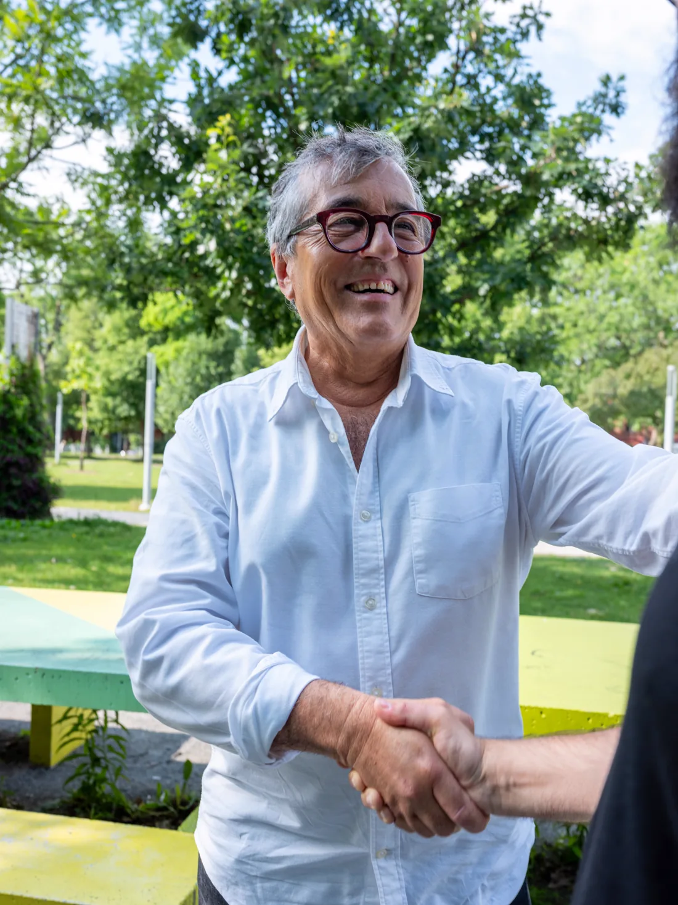

POUR UN REVENU DIGNE
- Augmenter le salaire minimum fédéral et améliorer l’assurance-emploi
- Soutenir les personnes malades et les personnes proches aidantes
- Augmenter les prestations pour aîné·e·s
Votre candidat dans
Rosemont—La Petite-Patrie


Pierre Céré
Je me lance avec le NPD pour la prochaine élection partielle qui aura lieu dans Rosemont—La Petite-Patrie.
J’ai l’intention de fédérer les forces progressistes de la circonscription et faire entendre une autre voix. Une voix qui porte les enjeux des citoyens et des citoyennes de Rosemont—La Petite-Patrie. Une voix qui parle du monde.
Je connais les quartiers de Rosemont et de La Petite-Patrie pour y avoir élevé ma famille pendant plus de 20 ans. Et je suis là où j’ai toujours été : participer à bâtir une société progressiste, à dimension humaine, pour les gens qui y vivent, et pour les prochaines générations.
Cette campagne, nous allons la bâtir ensemble.
Joignez-vous à nous!
Travailleur communautaire à la défense des droits socio-économiques des personnes sans emploi pendant plus de 40 ans, Pierre Céré a notamment été coordonnateur du Comité Chômage de Montréal (CCM) de 1997 à 2024 et porte-parole du Conseil national des chômeurs et chômeuses (CNC). Natif de Rouyn-Noranda, il arrive à Montréal en 1982 et est rapidement impliqué dans plusieurs mobilisations sociales, avant de prendre la direction de l'Amérique Latine à la fin des années 1980.
À son retour au Québec, il s'installe dans Rosemont—La Petite-Patrie, où il élévera ses deux enfants, s'investit dans les réseaux de solidarité internationale et travaille dans le milieu syndical, puis se fait remarquer par l'organisation d'importantes campagnes contre les politiques des gouvernements libéraux et conservateurs sur l'assurance-emploi. Il est aussi l’auteur de nombreux textes d’opinion et de plusieurs livres, dont Voyage au bout de la mine. Le scandale de la Fonderie Horne (Écosociété, 2023).
Nos priorités
Restons en contact
Une question, une idée ou l’envie de vous impliquer?
info@pierrecere.orgChaque appui donne plus de force à notre campagne dans Rosemont—La Petite-Patrie.